Cisco UCS C シリーズラックサーバを導入する
寄稿者
ここでは、手順 Express 構成で使用する Cisco UCS C シリーズスタンドアロンラックサーバを設定するための詳細な FlexPod について説明します。
CIMC の Cisco UCS C シリーズスタンドアロンサーバの初期セットアップを実行します
Cisco UCS C シリーズスタンドアロンサーバの CIMC インターフェイスの初期セットアップを行うには、次の手順を実行します。
次の表に、 Cisco UCS C シリーズスタンドアロンサーバごとに CIMC を設定するために必要な情報を示します。
| 詳細（ Detail ） | 詳細値 |
|---|---|
CIMC IP アドレス |
\<CIMC_IP>> |
CIMC サブネットマスク |
\<CIMC_netmask に追加されました |
CIMC デフォルトゲートウェイ |
\<CIMC_Gateway>> のようになります |

|
この検証で使用されている CIMC のバージョンは CIMC 4.4.0(4) です。 |
すべてのサーバ
-
Cisco KVM （キーボード、ビデオ、およびマウス）ドングル（サーバに付属）を、サーバ前面の KVM ポートに取り付けます。VGA モニタと USB キーボードを、 KVM ドングルの対応するポートに接続します。
サーバの電源を入れ、 CIMC 設定を開始するかどうか確認するプロンプトが表示されたら F8 キーを押します。
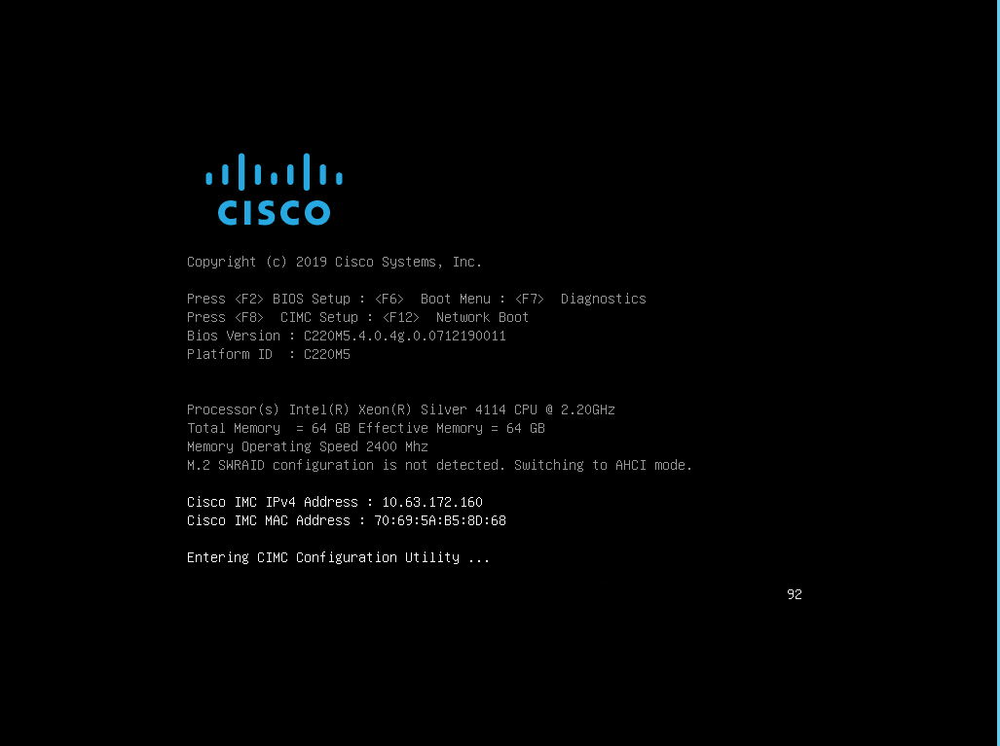
-
CIMC 設定ユーティリティで、次のオプションを設定します。
-
ネットワークインターフェイスカード（ NIC ）モード：
専用の「 [X] 」
-
IP （ベーシック）：
IPv4 ：「 [X] 」
DHCP が有効になっています
CIMC IP:`\<CIMC_IP>`
プレフィックス / サブネット：
\<CIMC_netmask>ゲートウェイ :
\<CIMC_gateway> -
VLAN （ Advanced ）： VLAN タギングを無効にする場合は、オフのままにします。
NIC の冗長性
なし :[X]`
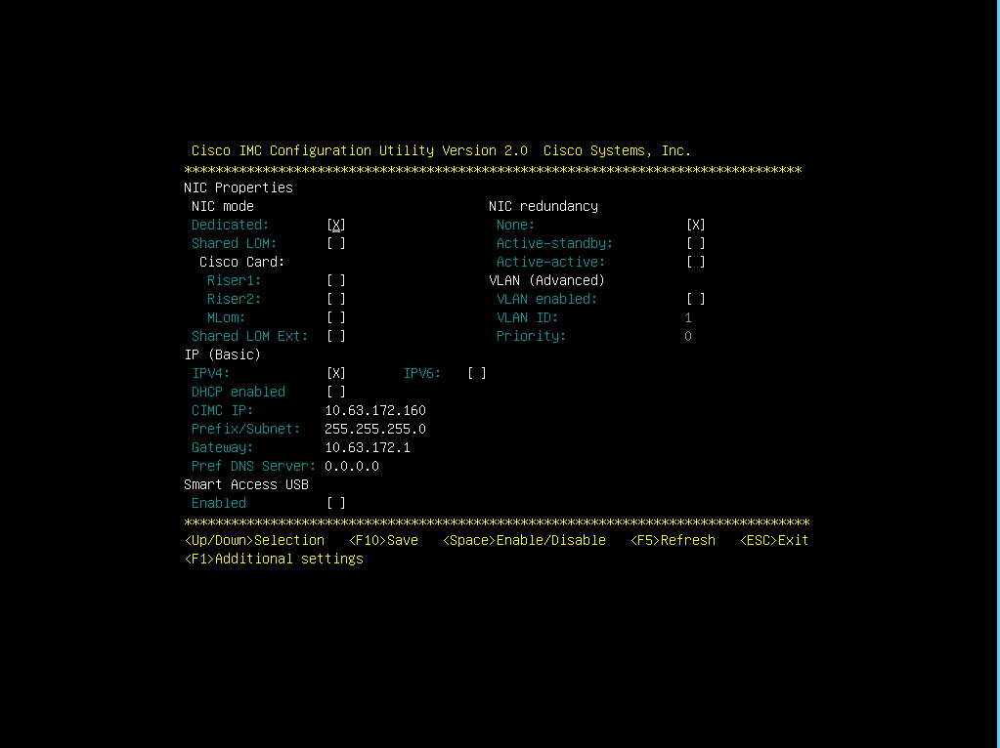
-
-
F1 キーを押して、その他の設定を表示します。
-
共通プロパティ：
ホスト名 :
\<ESXi_host_name>ダイナミック DNS:`[]
工場出荷時のデフォルト：オフのままにします。
-
デフォルトユーザ（ basic ）：
デフォルトのパスワード：
\<admin_password>パスワード「 \<admin_password>>` 」を再入力します
ポートのプロパティ：デフォルト値を使用します。
ポートプロファイル：クリアしたままにします。
-
-
F10 キーを押し、 CIMC インターフェイス設定を保存します。
-
設定を保存したら、 Esc キーを押して終了します。
Cisco UCS C シリーズサーバの iSCSI ブートを設定します
この FlexPod Express 構成では、 iSCSI ブートに VIC1457 が使用されます。
次の表に、 iSCSI ブートの設定に必要な情報を示します。
|
|
斜体のフォントは、 ESXi ホストごとに一意の変数を示します。 |
| 詳細（ Detail ） | 詳細値 |
|---|---|
ESXi ホストイニシエータの名前 |
<<var_UCS_initiator_name_a>> を参照してください |
ESXi ホスト iSCSI-A IP |
<<var_esxi_host_iscsia_ip>> |
ESXi ホスト iSCSI - ネットワークマスク |
<<var_esxi_host_iscsia_mask>> を指定します |
ESXi ホスト iSCSI A のデフォルトゲートウェイ |
<<var_esxi_host_iscsia_gateway>> を指定します |
ESXi ホストイニシエータ B の名前 |
<<var_UCS_initiator_name_b>> を参照してください |
ESXi ホスト iSCSI-B IP |
<<var_esxi_host_iSCSIb_ip>> |
ESXi ホストの iSCSI-B ネットワークマスク |
<<var_esxi_host_iSCSIb_mask>> を指定します |
ESXi ホスト iSCSI-B ゲートウェイ |
<<var_esxi_host_iSCSIb_gateway>> を指定します |
IP アドレス iSCSI_lif01a |
<<var_iscsi_dlif01a>> |
IP アドレス iSCSI_lif02a |
<<var_iscsi_dlif02a>> |
IP アドレス iSCSI_lif01b |
<<var_iscsi_dlif01b>> を参照してください |
IP アドレス iSCSI_lif02b |
<<var_iscsi_dlif02b>> |
インフラ SVM IQN |
<<var_svm_iqn>> をクリックします |
起動順序の設定
ブート順の設定を行うには、次の手順を実行します。
-
CIMC インターフェイスのブラウザウィンドウで、 [Compute] タブをクリックし、 BIOS を選択します。
-
Configure Boot Order （起動順序の設定）をクリックし、 OK をクリックします。
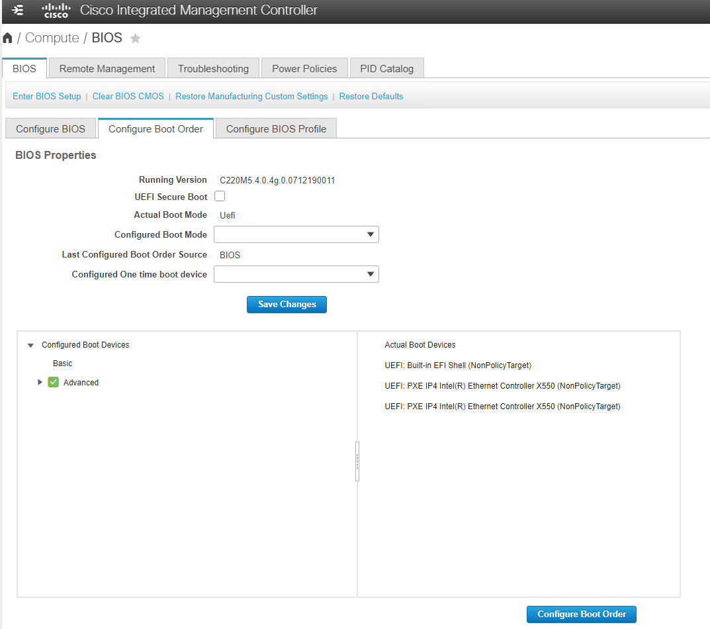
-
Add Boot Device の下のデバイスをクリックし、 Advanced タブに移動して、次のデバイスを設定します。
-
仮想メディアの追加：
名前： KVM-CD-DVD
サブタイプ： KVM マップ DVD
状態：有効
順序： 1.
-
iSCSI ブートの追加：
名前： iSCSI-A
状態：有効
ご注文： 2.
スロット： mLOM
ポート： 1.
-
Add iSCSI Boot をクリックします。
名前： iSCSI-B
状態：有効
順序： 3.
スロット： mLOM
ポート： 3.
-
-
Add Device をクリックします。
-
[ 変更の保存 ] をクリックし、 [ 閉じる ] をクリックします。
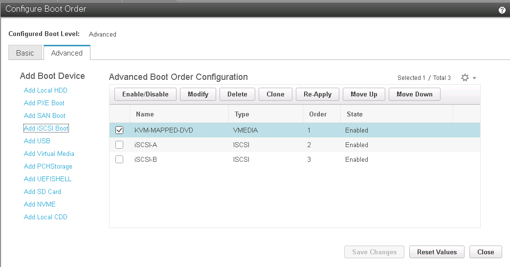
-
サーバをリブートして、新しいブート順序でブートします。
RAID コントローラを無効にする（存在する場合）
C シリーズサーバに RAID コントローラが搭載されている場合は、次の手順を実行します。SAN 構成からのブートでは RAID コントローラは必要ありません。必要に応じて、サーバから RAID コントローラを物理的に取り外すこともできます。
-
Compute タブで、 CIMC の左側のナビゲーションペインで BIOS をクリックします。
-
[Configure BIOS] を選択します。
-
下にスクロールして [PCIe Slot:HBA Option ROM] を表示します。
-
値が無効になっていない場合は、 disabled に設定します。
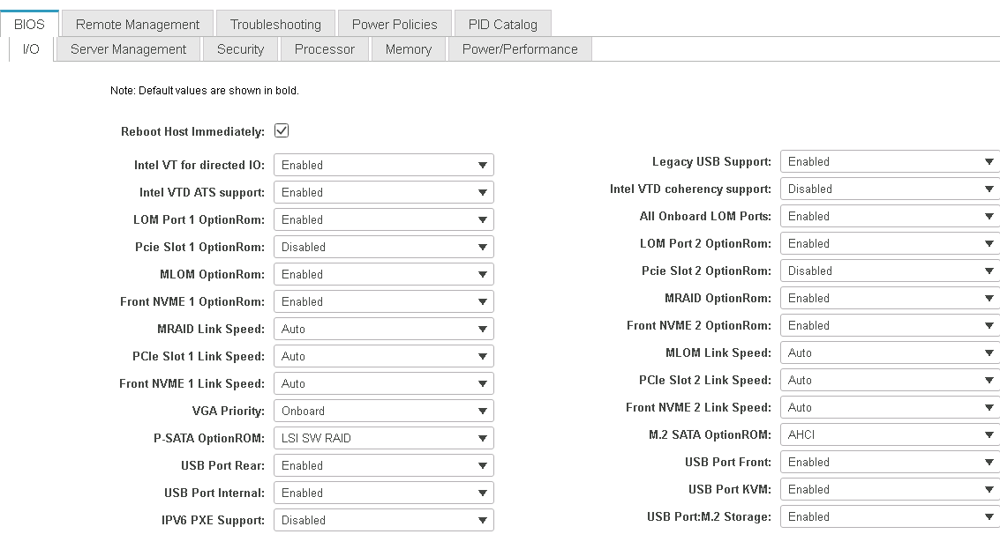
iSCSI ブート用に Cisco VIC1457 を設定します
次の設定手順は、 Cisco VIC 1457 で iSCSI ブートを使用する場合の手順です。
|
|
ポート 0 、 1 、 2 、および 3 間のデフォルトのポートチャネリングをオフにしてから、 4 つの個別ポートを設定する必要があります。ポートチャネリングがオフになっていない場合、 VIC 1457 には 2 つのポートのみが表示されます。CIMC でポートチャネルを有効にするには、次の手順を実行します。 |
-
[ ネットワーク ] タブで、 [Adapter Card mLOM] をクリックします。
-
General タブで、ポートチャネルのチェックを外します。
-
変更を保存し、 CIMC をリブートします。
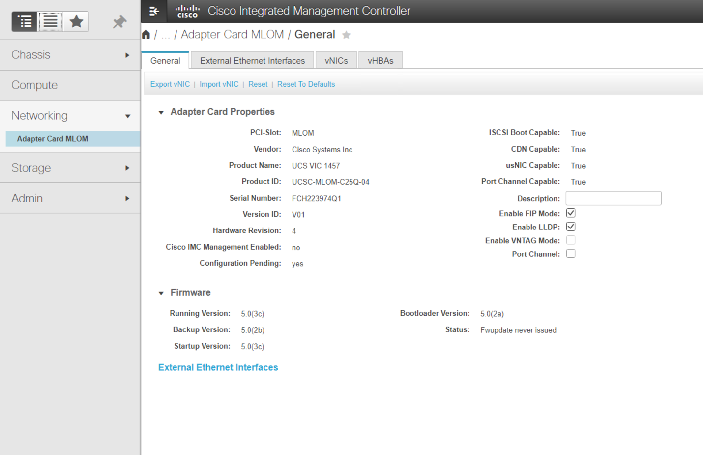
iSCSI vNIC を作成します
iSCSI vNIC を作成するには、次の手順を実行します。
-
[ ネットワーク ] タブで、 [Adapter Card mLOM] をクリックします。
-
[Add vNIC] をクリックして vNIC を作成します。
-
[Add vNIC] セクションで、次の設定を入力します。
-
名前： eth1
-
CDN 名： iscsi-vNIC-A
-
MTU ： 9000
-
デフォルト VLAN ：
\<<var_iscsi_vlan_a> -
VLAN モード：トランク
-
Enable PXE boot: チェック
-
-
[Add vNIC] をクリックし、 [OK] をクリックします。
-
このプロセスを繰り返して、 2 番目の vNIC を追加します。
-
vNIC eth3 に名前を付けます。
-
CDN 名： iscsi-vNIC-B
-
VLAN として「 <<var_iscsi_vlan_b>> 」と入力します。
-
アップリンクポートを 3 に設定します。
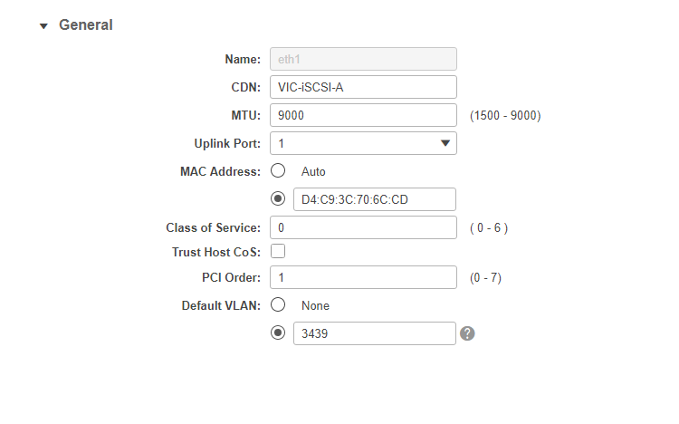
-
-
左側の vNIC eth1 を選択します。
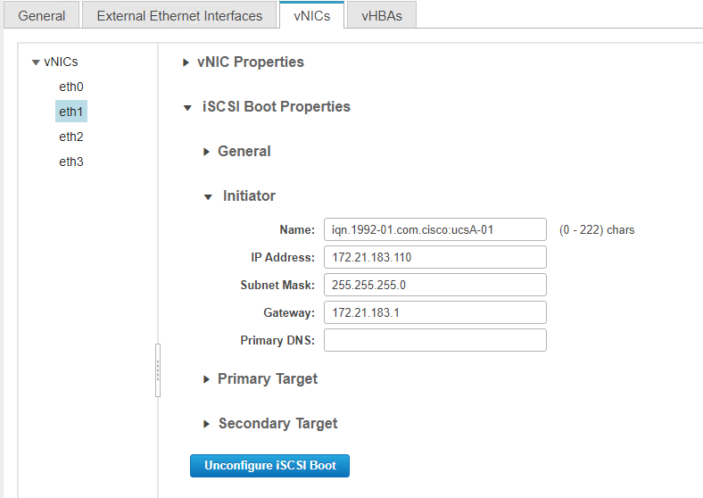
-
iSCSI Boot Properties （ iSCSI 起動プロパティ）で、イニシエータの詳細を入力します。
-
名前 :
\<<var_ucsa_initiator_name_a> -
IP アドレス :`<<var_esxi_hosta_iscsia_ip>>
-
サブネットマスク : `<<var_esxi_hosta_iscsia_mask>>
-
ゲートウェイ :`<<var_esxi_hosta_iscsia_gateway>>
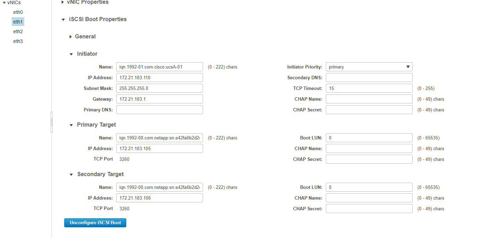
-
-
プライマリターゲットの詳細を入力します。
-
name ：インフラ SVM の IQN 番号
-
IP アドレス： iscsi_dlif01a の IP アドレス
-
ブート LUN ： 0
-
-
セカンダリターゲットの詳細を入力します。
-
name ：インフラ SVM の IQN 番号
-
IP アドレス： iSCSI_lif02a の IP アドレス
-
ブート LUN ： 0
ストレージ IQN 番号を取得するには 'vserver iscsi show コマンドを実行します
各 vNIC の IQN 名を必ず記録してください。これらのファイルはあとで必要になります。さらに、イニシエータの IQN 名は、各サーバおよび iSCSI vNIC で一意である必要があります。 -
-
[Save Changes] をクリックします。
-
vNIC eth3 を選択し、 Host Ethernet Interfaces セクションの上部にある iSCSI Boot ボタンをクリックします。
-
手順を繰り返して eth3 を設定します。
-
イニシエータの詳細を入力します。
-
名前 :
\<<var_ucsa_initiator_name_b> -
IP アドレス :
\<<var_esxi_HostB_iSCSIb_ip> -
サブネットマスク： `<<var_esxi_HostB_iSCSIb_mask>>
-
ゲートウェイ : `<<var_esxi_HostB_iSCSIb_gateway>>
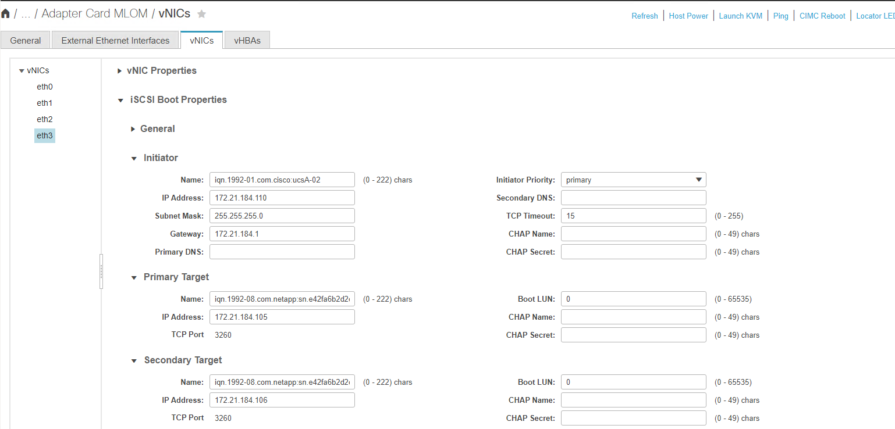
-
-
プライマリターゲットの詳細を入力します。
-
name ：インフラ SVM の IQN 番号
-
IP アドレス： iscsi_dlif01b の IP アドレス
-
ブート LUN ： 0
-
-
セカンダリターゲットの詳細を入力します。
-
name ：インフラ SVM の IQN 番号
-
IP アドレス： iscsi_dlif02b の IP アドレス
-
ブート LUN ： 0
ストレージ IQN 番号は、「 vserver iscsi show 」コマンドを使用して取得できます。
各 vNIC の IQN 名を必ず記録してください。これらのファイルはあとで必要になります。 -
-
[Save Changes] をクリックします。
-
このプロセスを繰り返して、 Cisco UCS サーバ B の iSCSI ブートを設定します
ESXi の vNIC を設定します
ESXi の vNIC を設定するには、次の手順を実行します。
-
CIMC インターフェイスブラウザウィンドウで、 [Inventory] をクリックし、右側のペインで [Cisco VIC adapters] をクリックします。
-
[Networking] > [Adapter Card mLOM] で [vNICs] タブを選択し、その下の vNIC を選択します。
-
eth0 を選択し、 Properties をクリックします。
-
MTU を 9000 に設定します。[Save Changes] をクリックします。
-
VLAN をネイティブ VLAN 2 に設定します。
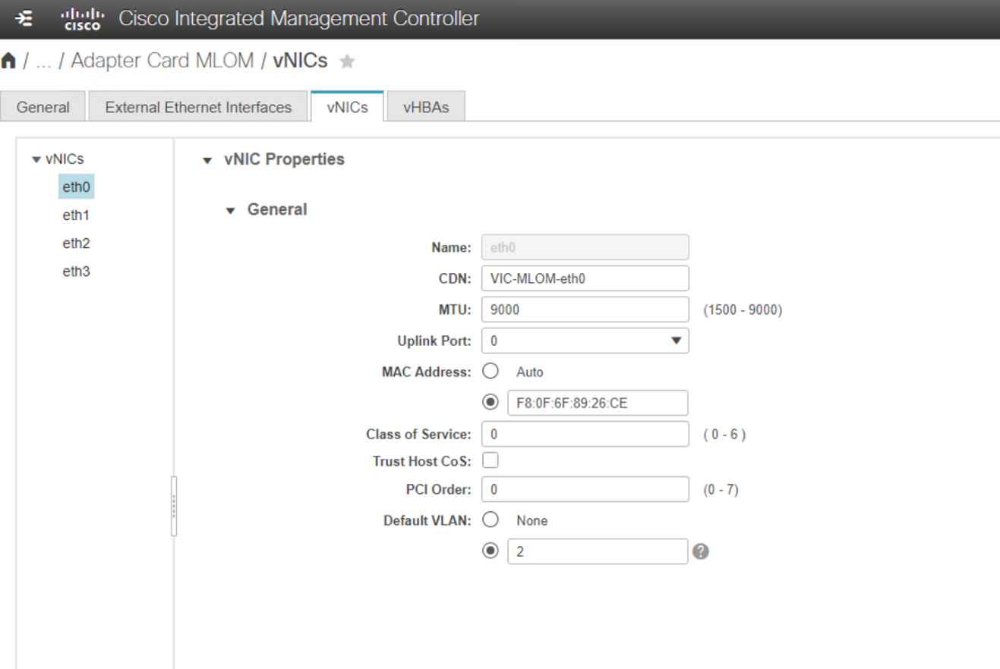
-
eth1 に手順 3 と 4 を繰り返し、アップリンクポートが eth1 に 1 に設定されていることを確認します。
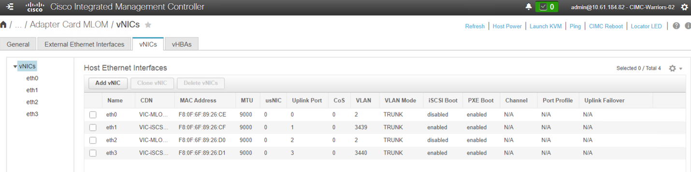
この手順は、最初の Cisco UCS サーバノードごと、および環境に追加する Cisco UCS サーバノードごとに繰り返す必要があります。
 ドキュメントの変更をリクエスト
ドキュメントの変更をリクエスト GitHub で編集
GitHub で編集 寄稿者向けガイド
寄稿者向けガイド